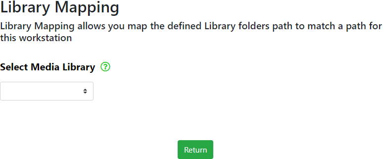

Library Mapping allows you to select the library you wish to work with when using the Find Media module and allows WebTools-NG to read the configured folder/directory path directly from your Plex Media Server device.
The local file/directory path will then be compared to the Plex Media Server database in order to locate any missing files that may exist between the local folder/directory and the PMS database.
Note: In order to use this settings module, you must be local to your Plex Media Server media storage device.
Before you do anything else, make sure you have selected a server to work with. Most operations will fail if you have not selected a server.


Click on the Select Media Library drop down menu and select the library you wish to work with. The following information will appear showing the configured PMS database location and the current location on your Workstation or Server device.
Return
Click on the Return button to return you to the Global Settings page.

To change the folder/directory path, click on the address shown under PMS or Workstation in order to change it.
This may require you to enter the UNC (\\Device Name\path\path) address for your NAS or other device into the file/folder dialogue.
This may also depend on your PC/Laptop OS.
The changes made to your library paths should be retained for any subsequent use, but do check that the paths are correct if you have any issues using Find Media.
Return
Click on the Return button to return you to the Global Settings page.
2022 - All Rights Reserved - WebTools-NG